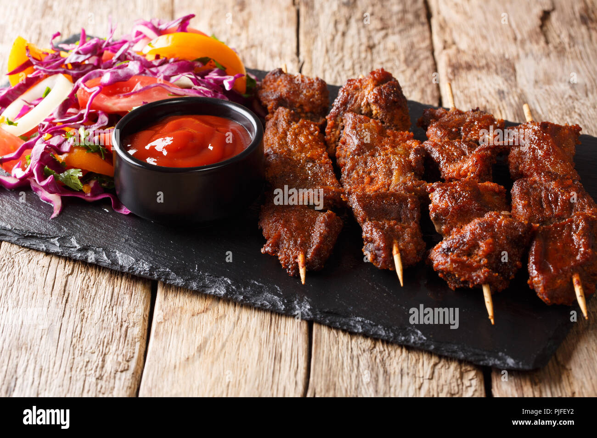

Suya

Authentic West African Barbecue
Experience the vibrant flavors of West Africa with our Suya recipe.Thinly sliced meat marinated in a robust
blend of spices, grilled to perfection, and served with fresh vegetables nd tangy relish. Embark on a culinary
adventure with this mouthwatering dish that captures the essence of authentic barbecue.
Ingredients
- Tender, fatty Beef (Sirloin, chuck roast and
ribeye roast staek are good examples)
- Skewers
- Roasted peanuts (Alamond and sesame seeds
make a good substitute)
- Garlic
- Onion
- Hot ground pepper
- Chicken bouillon spice
- Onion Powder
- White Pepper and Salt
- Smoked paprika
- Cayenne
Recipe Instructions
-
Soak the skewers totally submerged in water
for at least 20 minutes.
-
Heat the oven to 450°F and lightly spray or oil
baking sheet or roasting pan.
-
Peel roasted peanuts, and grind them in a
coffee grinder with skin on.
-
Mix all the spices in a medium bowl.
-
Add the ground peanuts to the spice mixture and set aside
-
Pat the suya steaks dry with a paper towel and
Slice the steak diagonally in medium-thin
-
Add about 2 tablespoons of oil into the sliced beef.
-
Add 2-3 tablespoons of the suya spice mixture.
-
Mix everything until fully combined.
-
Cover the bowl with a plastic cling wrap and marinate for an hour.
-
Rub the skewered steak strips on both sides with the rest of the
spice mixture.
-
Line a roasting or baking sheet with foil and place the skewers on top.
-
Drizzle with oil and bake them for about 12-15 minutes.
-
For the last 3 minutes of baking, switch the setting from bake
to broil .
- Serve fresh from the oven or grill with onions and tomatoes.
Back to top
Main Page
Original Recipe